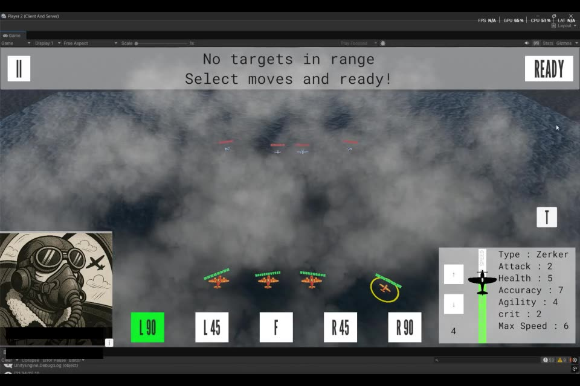

TODO Opening paragraph.
TODO Section heading
TODO More writing. Bold and links work as normal.
- TODO A list item
- TODO Another list item

TODO Closing paragraph.
TODO Opening paragraph.
TODO More writing. Bold and links work as normal.

TODO Closing paragraph.